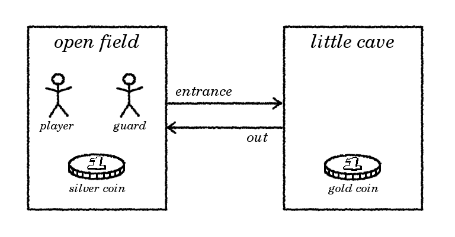

How to program a text adventure in C
6. Passages
It’s time to draw a map - and implement it!
The best tools for drawing a map will always be: a pencil and a piece of paper.
A basic map consists of locations (the rectangles),
connected by passages (the arrows).
We already created locations in chapter 3,
now we will start adding the passages.

In the virtual world,
a ‘passage’ may be anything connecting two locations:
a road, a door, a stretch of sand in a desert.
Basically, a passage has the following properties:
- A starting point (location).
- A destination (location).
- The narrative description, for example “a forest path”.
- The tag by which the passage is referred to in the go command.
Considering these properties, it may not come as a surprise that
the struct object defined in chapter 4
is very suitable to store a passage.
In fact, a passage is not that different from an item or actor;
it is present at a certain location as a ‘visible exit’
(this location is the starting point).
It just behaves differently to certain commands.
In particular the command ‘go’:
applied to a passage, go will change the player’s location.
The target location (the ‘destination’)
can be stored in the struct object as a new attribute.
| struct object {
const char *description;
const char *tag;
struct object *location;
struct object *destination;
};
|
Notes:
- Obviously, destination is unused in most other objects
(items, actors), but I consider this to be a minor waste of space.
- A passage runs in one direction only;
bi-directional passages are implemented by
defining two separate uni-directional passages.
Again, let’s not bother now about the apparent waste of space.
So we expand the array of objects:
| Sample output |
|---|
Welcome to Little Cave Adventure.
You are in an open field.
You see:
a silver coin
a burly guard
a cave entrance
--> go entrance
OK.
You are in a little cave.
You see:
a gold coin
a way out
--> go out
OK.
You are in an open field.
You see:
a silver coin
a burly guard
a cave entrance
--> go cave
OK.
You are in a little cave.
You see:
a gold coin
a way out
--> quit
Bye!
|
| object.h |
- typedef struct object {
- const char *description;
- const char *tag;
- struct object *location;
- struct object *destination;
- } OBJECT;
- extern OBJECT objs[];
- #define field (objs + 0)
- #define cave (objs + 1)
- #define silver (objs + 2)
- #define gold (objs + 3)
- #define guard (objs + 4)
- #define player (objs + 5)
- #define intoCave (objs + 6)
- #define exitCave (objs + 7)
- #define endOfObjs (objs + 8)
|
| object.c |
- #include <stdio.h>
- #include "object.h"
- OBJECT objs[] = {
- {"an open field" , "field" , NULL , NULL },
- {"a little cave" , "cave" , NULL , NULL },
- {"a silver coin" , "silver" , field, NULL },
- {"a gold coin" , "gold" , cave , NULL },
- {"a burly guard" , "guard" , field, NULL },
- {"yourself" , "yourself", field, NULL },
- {"a cave entrance", "entrance", field, cave },
- {"a way out" , "out" , cave , field }
- };
|
Next, we have to make some changes to function executeGo.
| location.h |
- extern void executeLook(const char *noun);
- extern void executeGo(const char *noun);
|
| location.c |
- #include <stdio.h>
- #include <string.h>
- #include "object.h"
- #include "misc.h"
- #include "match.h"
- void executeLook(const char *noun)
- {
- if (noun != NULL && strcmp(noun, "around") == 0)
- {
- printf("You are in %s.\n", player->location->description);
- listObjectsAtLocation(player->location);
- }
- else
- {
- printf("I don't understand what you want to see.\n");
- }
- }
- void executeGo(const char *noun)
- {
- OBJECT *obj = matchingObject(noun);
- if (obj == NULL)
- {
- printf("I don't understand where you want to go.\n");
- }
- else if (obj == player->location)
- {
- printf("You are already there.\n");
- }
- else if (getPassageTo(obj) != NULL)
- {
- printf("OK.\n");
- player->location = obj;
- executeLook("around");
- }
- else if (obj->location == player->location && obj->destination != NULL)
- {
- printf("OK.\n");
- player->location = obj->destination;
- executeLook("around");
- }
- else
- {
- printf("You can't go there.\n");
- }
- }
|
Explanation:
- Line 31:
we no longer allow the player to jump freely from one location to another:
there must be a passage connecting the two.
We use a separate function getPassageTo (defined below) to check this.
- Line 37-42:
besides go <location> (lines 31-36),
we now offer an alternative way for the player to move:
go <passage>.
For example, when in the field,
go cave and go entrance will have the same effect.
Function executeGo uses a separate function
to check if two locations are connected by a passage.
Because such a function will prove to be useful in the next chapter as well,
I made it a general function getPassageTo as part of misc.c.
| misc.h |
- extern OBJECT *getPassageTo(OBJECT *targetLocation);
- extern OBJECT *actorHere(void);
- extern int listObjectsAtLocation(OBJECT *location);
|
| misc.c |
- #include <stdio.h>
- #include "object.h"
- #include "misc.h"
- OBJECT *getPassageTo(OBJECT *targetLocation)
- {
- OBJECT *obj;
- for (obj = objs; obj < endOfObjs; obj++)
- {
- if (obj->location == player->location &&
- obj->destination == targetLocation)
- {
- return obj;
- }
- }
- return NULL;
- }
- OBJECT *actorHere(void)
- {
- OBJECT *obj;
- for (obj = objs; obj < endOfObjs; obj++)
- {
- if (obj->location == player->location && obj == guard)
- {
- return obj;
- }
- }
- return NULL;
- }
- int listObjectsAtLocation(OBJECT *location)
- {
- int count = 0;
- OBJECT *obj;
- for (obj = objs; obj < endOfObjs; obj++)
- {
- if (obj != player && obj->location == location)
- {
- if (count++ == 0)
- {
- printf("You see:\n");
- }
- printf("%s\n", obj->description);
- }
- }
- return count;
- }
|
Explanation:
- Line 8-11:
we scan through all objects until we encounter a passage running
from player->location (the player’s current location)
to targetLocation (the function’s parameter).
- Line 13:
if a matching passage is found, we return a pointer to the passage object.
- Line 16:
if no such passage exists, we return NULL.
The other modules
(parsexec.c, execute.c, match.c, move.c)
remain unchanged, you can see them in the previous chapters.
Obviously, the map in this sample is trivial:
there are only two locations, and they are connected in both directions.
I will leave it up to the reader to draw a more complicated map
and turn it into a list of objects (locations and passages).
Many responses in the game are still kind of dull.
For example,
“go guard” returns “You can’t go there.”
Exactly the kind of output I criticized in the previous chapter!
This is something we will be working on in the next chapter.
Next chapter: 7. Distance
{kind=link}